먼저 생각해 보세요.
ein lustiger Junge. lustig 뒤에 무엇이 붙었나요?
형용사가 명사 앞에 오면 끝이 붙어요. der Junge라서 -er예요.
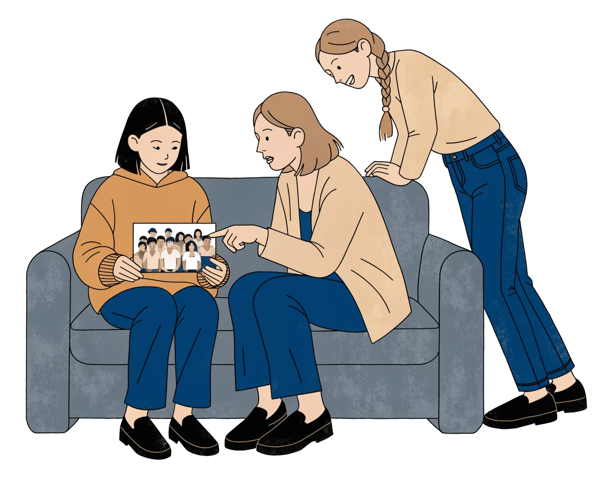
4월 말이에요. 새 반 사진이 나왔어요. Yuna가 Sabine에게 친구들이 누구인지, 어떤 사람인지 이야기해요.
눌러서 들어 보세요.
먼저 생각해 보세요.
ein lustiger Junge. lustig 뒤에 무엇이 붙었나요?
형용사가 명사 앞에 오면 끝이 붙어요. der Junge라서 -er예요.
Lektion 1의 낱말 다섯 개를 다시 떠올려 보세요.
문법 dass-Sätze, Adjektive nach ein, eine (Nominativ, Akkusativ)
이 과를 마치면 친구의 생김새와 성격을 묘사하고, 다른 사람이 한 말을 전할 수 있어요.
저녁, Wagner 가족의 거실이에요. Yuna가 새로 찍은 반 사진을 보여 줘요.
들으면서 찾아보세요. Paul은 어떻게 생겼나요?
독일어 시간이에요. 한 사람을 묘사하면 나머지가 누구인지 맞혀요.
들으면서 찾아보세요. Lukas가 묘사한 사람은 누구인가요?
두 대화를 듣고 답하세요.
Paul은 어떻게 생겼나요?
Lukas sagt, dass Paul gut Gitarre spielt.
Wie findet Yuna Elif?
Ich finde, dass sie sehr hilfsbereit ist.
사진에서 Lukas는 어떤가요?
Lukas가 묘사한 사람은 누구인가요?
Elif ist ein kleines Mädchen.
Die Person ist ein großes Mädchen. 키가 커요.
Frau Schneider는 Lukas에 대해 뭐라고 했나요?
낱말 27개예요. 낱말이나 예문 앞의 단추를 누르면 소리가 나요. 명사는 der, die, das를 색으로 구분했어요.
aussehen (du siehst aus, er sieht aus) ~하게 보이다, 생기다
Du siehst toll aus.너 멋져 보여.
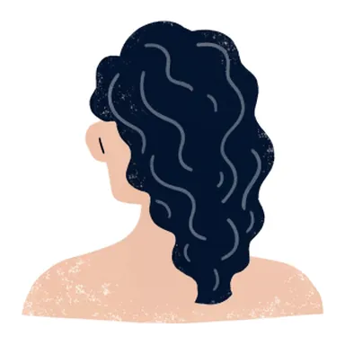
das Haar, die Haare 머리카락
Sie hat schöne Haare.그녀는 머리가 예뻐요.
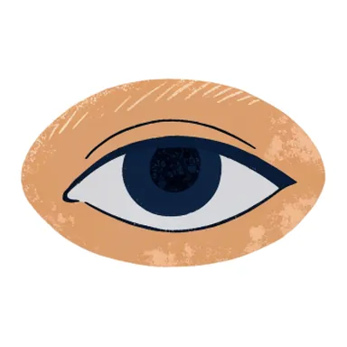
das Auge, die Augen 눈
Er hat braune Augen.그는 눈이 갈색이에요.
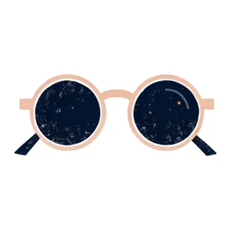
die Brille, die Brillen 안경
Paul trägt eine Brille.Paul은 안경을 써요.
der Bart, die Bärte 수염
Thomas hat einen kurzen Bart.Thomas는 수염이 짧아요.
lang 긴
Elif hat lange Haare.Elif는 머리가 길어요.
kurz 짧은
Paul hat kurze Haare.Paul은 머리가 짧아요.
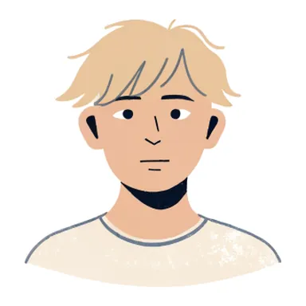
blond 금발의
Er hat blonde Haare.그는 금발이에요.
braun 갈색의
Mein Hund ist braun.우리 개는 갈색이에요.
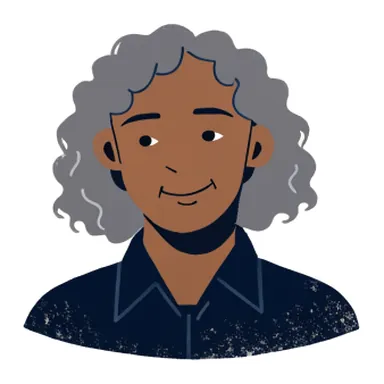
lockig 곱슬곱슬한
Lea hat lockige Haare.Lea는 곱슬머리예요.
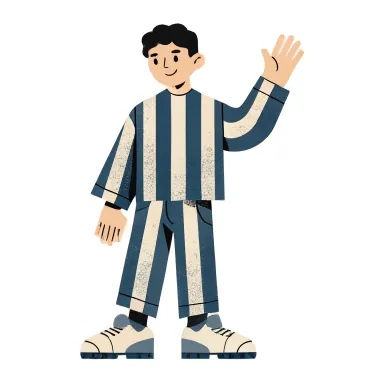
freundlich 친절한
Elif ist sehr freundlich.Elif는 아주 친절해요.
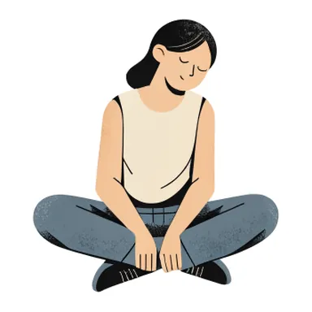
ruhig 조용한, 차분한
Sie ist ein bisschen ruhig.그녀는 조금 조용해요.
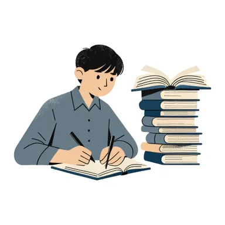
fleißig 부지런한, 성실한
Emma ist eine fleißige Schülerin.Emma는 성실한 학생이에요.
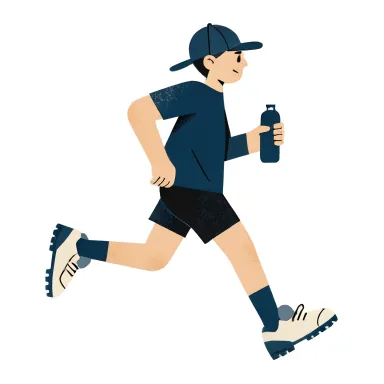
sportlich 운동을 잘하는
Lukas ist sehr sportlich.Lukas는 운동을 아주 잘해요.
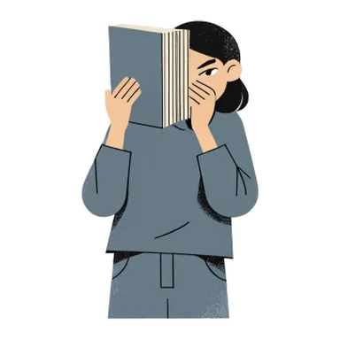
schüchtern 수줍음이 많은
Am Anfang war Yuna schüchtern.처음에 Yuna는 수줍음이 많았어요.
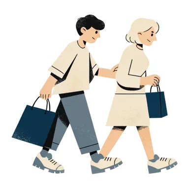
hilfsbereit 남을 잘 돕는
Meine Freundin ist hilfsbereit.내 친구는 남을 잘 도와요.
ehrlich 정직한, 솔직한
Ein guter Freund ist ehrlich.좋은 친구는 솔직해요.
pünktlich 시간을 잘 지키는
Heute war Lukas pünktlich.오늘 Lukas는 제시간에 왔어요.
sagen, hat gesagt 말하다
Was hat er gesagt?그가 뭐라고 했어?
glauben, hat geglaubt 믿다, ~라고 생각하다
Ich glaube, dass es Elif ist.내 생각에는 Elif 같아.
dass ~라는 것, ~라고
Ich finde, dass sie nett ist.나는 그녀가 착하다고 생각해요.
beschreiben, hat beschrieben 묘사하다
Beschreibt eine Person!한 사람을 묘사해 보세요!
kennen, hat gekannt (사람이나 장소를) 알다
Kennst du Paul?Paul을 알아?
die Person, die Personen 사람
Wer ist die Person?그 사람은 누구예요?
immer 항상
Er kommt immer zu spät.그는 항상 지각해요.
ein bisschen 조금
Ich bin ein bisschen müde.나는 조금 피곤해요.
Stimmt! 맞아!
Stimmt! Das ist Elif.맞아! Elif야.
이 과의 낱말로 여덟 문제를 풀어요.
예문을 보고 답해 보세요.
der Junge 앞에서 lustig에는 어떤 끝이 붙었나요?
규칙
형용사가 명사 앞에 오면 끝이 붙어요. ein만 보아서는 der 명사인지 das 명사인지 알 수 없어서, 형용사의 끝이 그것을 알려 줘요. der 명사 앞에서는 -er, das 명사 앞에서는 -es, die 명사 앞에서는 -e예요.
| 명사 | ein, eine + 형용사 |
|---|---|
| der Junge | ein netter Junge |
| das Mädchen | ein nettes Mädchen |
| die Freundin | eine nette Freundin |
| die Freunde (Pl.) | nette Freunde |
주의 sein 뒤에 형용사만 올 때는 끝이 없어요. Der Junge ist nett. 명사 앞에 올 때만 끝을 붙여요. mein, dein, kein 뒤에서도 똑같아요. mein neuer Freund, kein gutes Foto.
예문을 보고 답해 보세요.
4격에서 모양이 달라지는 것은 어느 것인가요?
규칙
4격에서는 der 명사만 달라져요. einen 뒤의 형용사에는 -en이 붙어요. das 명사와 die 명사, 복수는 1격과 같아요.
| 명사 | 1격 | 4격 |
|---|---|---|
| der Pullover | ein blauer Pullover | einen blauen Pullover |
| das Kleid | ein blaues Kleid | ein blaues Kleid |
| die Jacke | eine blaue Jacke | eine blaue Jacke |
| die Schuhe (Pl.) | blaue Schuhe | blaue Schuhe |
주의 haben, tragen, suchen, kaufen 뒤에는 4격이 와요. Ich habe einen kleinen Bruder. 형용사가 둘이면 둘 다 같은 끝을 붙여요. lange braune Haare.
예문을 보고 답해 보세요.
dass 문장에서 동사는 어디에 있나요?
규칙
다른 사람의 말이나 내 생각을 전할 때 dass를 써요. weil 문장처럼 동사가 맨 끝으로 가고, dass 앞에 쉼표를 찍어요. sagen, finden, glauben, wissen 뒤에 자주 와요.
| 원래 문장 | dass 문장 |
|---|---|
| Paul ist lustig. | Emma sagt, dass Paul lustig ist. |
| Sie ist nett. | Ich finde, dass sie nett ist. |
| Er kommt später. | Er schreibt, dass er später kommt. |
| Ich habe keine Zeit. | Sie sagt, dass sie keine Zeit hat. |
주의 말을 전할 때는 사람이 바뀌어요. Emma: „Ich habe keine Zeit.“ → Emma sagt, dass sie keine Zeit hat.
Elif가 오빠 Can을 소개해요. 듣고 답하세요.
Mein Bruder Can
Elif Ich habe zwei Brüder. Heute erzähle ich von Can. Er ist neunzehn Jahre alt.
Elif Can ist mein großer Bruder. Er hat kurze schwarze Haare und einen kurzen Bart.
Elif Er ist sehr sportlich. Er spielt jeden Samstag Basketball.
Elif Meine Mutter sagt, dass Can nicht fleißig ist. Aber ich finde, dass er ein toller Bruder ist.
Elif Er ist lustig und er hilft mir oft bei den Hausaufgaben.
Wie alt ist Can?
Wie sieht Can aus?
Can spielt jeden Samstag Fußball.
Er spielt Basketball.
Elif의 어머니는 Can에 대해 뭐라고 하나요?
Elif findet, dass Can ein toller Bruder ist.
듣고 알맞은 것을 고르세요.
어떤 사람인가요?
Die Person hat lange Haare und trägt eine Brille.
어떤 사람인가요?
Er ist ein ruhiger Junge. Er liest gern.
Lukas는 뭐라고 했나요?
Lukas sagt, dass er heute später kommt.
Yuna는 어떻게 생각하나요?
Ich glaube, dass Paul krank ist.
Emma가 블로그에 쓴 글이에요. 읽고 답하세요.
Meine Leute
Heute schreibe ich über meine Leute. Das sind meine Freunde und meine Familie.
Yuna wohnt jetzt bei uns. Sie kommt aus Korea und hat schwarze Haare. Am Anfang war sie schüchtern, aber jetzt ist sie ein lustiges Mädchen.
Lukas kenne ich schon lange. Er ist ein sportlicher Junge, aber er ist nicht immer pünktlich.
Elif ist eine ruhige Person. Sie hat lange braune Haare und ist sehr hilfsbereit. Ich finde, dass sie eine gute Freundin ist.
Und mein Vater? Er hat einen kurzen Bart und kocht jeden Tag. Meine Freunde sagen, dass er ein toller Koch ist.
Wie war Yuna am Anfang?
Lukas ist immer pünktlich.
Er ist nicht immer pünktlich.
Wie sieht Elif aus?
Emma의 친구들은 Emma의 아버지에 대해 뭐라고 하나요?
Emma findet, dass Elif eine gute Freundin ist.
1격이에요. 알맞은 형용사 끝을 고르세요.
Paul ist ein Junge.
der Junge라서 -er예요.
Elif ist eine Freundin.
die Freundin이라서 -e예요.
Das ist ein Foto.
das Foto라서 -es예요.
Yuna ist ein Mädchen.
Thomas ist ein Koch.
Das sind Freunde.
관사 없는 복수는 -e예요.
4격이에요. 알맞은 형용사 끝을 고르세요.
Lukas trägt einen Pullover.
der Pullover의 4격은 einen …-en이에요.
Sie hat Haare.
Paul trägt eine Brille.
Ich habe einen Bruder.
Emma kauft ein Kleid.
Thomas hat einen Bart.
들은 말을 dass로 전해요. 알맞은 말을 고르세요.
Yuna: „Ich bin müde.“ → Yuna sagt, dass müde ist.
전할 때는 ich가 sie로 바뀌어요.
Lukas: „Ich komme später.“ → Lukas sagt, dass er später .
Elif: „Ich habe keine Zeit.“ → Elif sagt, dass sie keine Zeit .
Paul: „Ich bin krank.“ → Paul schreibt, er krank ist.
동사 ist가 맨 끝에 있어요.
Emma: „Der Film ist toll.“ → Emma findet, dass der Film toll .
낱말을 순서대로 눌러 문장을 만드세요.
Lukas 말로는 Paul이 재미있대.
나는 그녀가 착하다고 생각해.
Emma는 시간이 없다고 해.
내 생각에는 그가 아픈 것 같아.
낱말과 뜻을 짝지으세요.
듣고 그대로 써 보세요.
Paul ist ein lustiger Junge. Paul은 재미있는 애야.
Sie hat lange braune Haare. 그녀는 긴 갈색 머리야.
Ich glaube, dass es Elif ist! 내 생각에는 Elif 같아!
Er hat kurze blonde Haare. 그는 짧은 금발 머리야.
Sie hat braune Augen. 그녀는 눈이 갈색이야.
Er trägt eine Brille. 그는 안경을 써.
Du siehst toll aus. 너 멋져 보여.
Er ist ein lustiger Junge. 그는 재미있는 애야.
Sie ist eine ruhige Person. 그녀는 조용한 사람이야.
Sie ist sehr hilfsbereit. 그녀는 남을 정말 잘 도와.
Lukas sagt, dass … Lukas 말로는 ~래.
Ich finde, dass … 나는 ~라고 생각해.
Ich glaube, dass … 내 생각에는 ~인 것 같아.
Wer ist das? 누구일까?
Jetzt bin ich dran. 이제 내 차례야.
Richtig! / Stimmt! 맞아!
대화 B에서 역할을 하나 고르세요. 상대의 말은 음성으로 나오고, 내 차례에는 직접 말해요.
친구 한 명을 골라 생김새와 성격을 적으세요. 완성된 문장을 소리 내어 읽어 보세요.
Mina hat lange schwarze Haare.
Mina ist lustig.
Ich finde, dass Mina sehr hilfsbereit ist.
Meine Leute
친구나 가족 한 사람을 소개하는 글을 써 보세요. 여섯 문장쯤 써요.
Das ist meine Freundin Mina. Sie wohnt in Seoul. Mina hat lange schwarze Haare und braune Augen. Sie trägt eine Brille. Sie ist ein lustiges Mädchen und sehr sportlich. Meine Mutter sagt, dass Mina immer freundlich ist. Ich finde, dass sie eine gute Freundin ist.
다 쓴 뒤에 확인해 보세요.
Ich kann Personen beschreiben.사람의 생김새와 성격을 묘사할 수 있어요.
Ich kann Freunde vorstellen.친구를 소개할 수 있어요.
Ich kann erzählen, was andere sagen.다른 사람이 한 말을 전할 수 있어요.